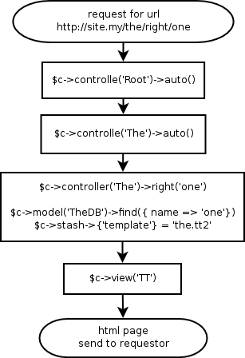

Catalyst tricks
Jozef
Short intro to Catalyst

- Catalyst = MVC web framework
- in Catalyst everything = $c
$c->model() - use base 'Catalyst::Model';
$c->view() - use base 'Catalyst::View';
$c->controller() - use base 'Catalyst::Controller';
- elegant way to have a tool organized
web request flowchart

What is a $c->view()?
package ViennaPM1::View::Dump;
use base 'Catalyst::View';
use File::Slurp;
sub render {
my ($self, $c, $dump_name) = @_;
$dump_name = $c->config->{'View::Dump'}->{'path'}.'/'.$dump_name;
return read_file($c->path_to($dump_name).'');
}
sub process {
my ($self, $c) = @_;
$c->response->content_type('text/plain');
$c->response->body(
$self->render($c, $c->stash->{'template'})
);
return 1;
}
1;
What is a $c->model()?
package ViennaPM1::Model::Constants;
use base 'Catalyst::Model';
my %constants = ( 'p' => 'perl', 'm' => 'mongers' );
sub named {
my ($self, $name) = @_;
die 'no such constatnt' if not exists $constants{$name};
return $constants{$name};
}
sub names {
return join ', ', keys %constants;
}
1;
What is a $c->controller()?
package ViennaPM1::Controller::Root;
use base 'Catalyst::Controller';
__PACKAGE__->config->{'namespace'} = '';
sub index : Private {
my ( $self, $c ) = @_;
$c->stash->{'message'} =
$c->model('Constants')->names.', generated at: '.$c->time_now;
$c->stash->{'template'} = 'index.tt2';
# default view is called to handle the template
}
sub dump : Local {
my ( $self, $c, $name ) = @_;
$c->stash->{'template'} = $name;
$c->forward('View::Dump');
}
1;
more $c methods
buildin
- $c->config->{} - hash ref of configuration variables
- $c->stash->{} - hash ref of temporary (per request) variables
- $c->uri_for('/') - get http url for catalyst uri
- $c->log->debug - loggin function
- ...
others comes from pluggins
- $c->session - hash of session variables
Catalyst::Plugin::Session - $c->authenticate
Catalyst::Plugin::Authentication - $c->require_ssl
Catalyst::Plugin::RequireSSL - and much more...
see Catalyst::Manual::Plugins
So what is the plugin after all?
- plugin can execute stuff at setup time
- plugin can add methods to the $c
- and this is why everything in Catalyst is $c
- let's have an example
Plugin
package Catalyst::Plugin::TimeNow;
use POSIX 'strftime';
sub setup {
my $c = shift;
$c->log->debug('Now we have: '.time_now($c));
$c->NEXT::setup( @_ );
}
sub time_now {
my $c = shift;
my $time_format = $c->config->{'TimeNow'}->{'format'} || '%a %b %e %H:%M:%S %Y';
return strftime $time_format, localtime;
}
1;
the Glue
package ViennaPM1;
use Catalyst::Runtime '5.70';
my @plugins;
BEGIN {
push(@plugins, '-Debug') if $ENV{'IN_DEBUG_MODE'};
push(@plugins, qw(
ConfigLoader
DefaultEnd
Static::Simple
TimeNow
));
}
use Catalyst @plugins;
__PACKAGE__->setup;
1;
Replace 'please come back later'
- in debug mode the error "output" is fine, but please come back later ;)
- the trick is to have $c->finalize_error
- sub finalize_error {} in the MyApp.pm
- plugin that inherits finalize_error function
- Catalyst::Plugin::CustomErrorMessage
two types of errors
- what we want is to have our nice header.tt + footer.tt + site.css look also for errors
- with code/syntax errors we can call $c->view('TT')->render( ...
- for unhadled actions like wrong url we can do
$c->response->redirect($c->uri_for('/'))
havving flash variable set
$c for scripts
access to $c->controlle()
- we what write script that will notify users about their account expiration, some actions that they need to take, or just start some daily data processing
- we want to launch some action triggered by email, same as from web.
- we use $c->controller('The')->right($c, )
access to $c->model()
- same db login config for webapp and scripts
$c for scripts
example
- $c->controller('Email')->send({}) for sending emails
- it will use $c->view('EmailTT') to construct the html email body
- we can use it for both web part and the script part
- it will use the same code